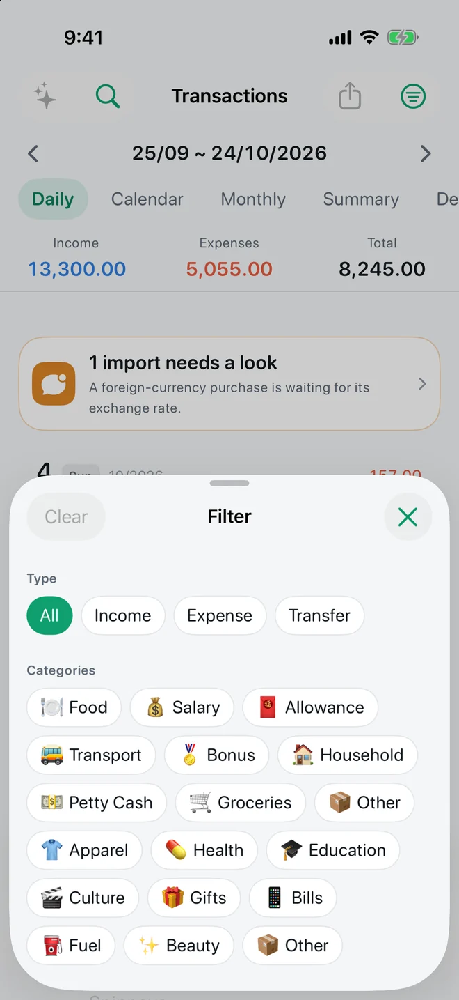

FEATURE · PRIVACY · FREE
A money app that never asks for your bank password.
TrackExpenses has no bank connection and no app account. Your ledger lives on your device, with optional sync through your own private iCloud, and App Lock protects it with a passcode and Face ID.


Real app screens with example records.
What stays where
- No bank login: entries come from you, your voice, or messages you choose to pass in through Shortcuts.
- No account: nothing to sign up for; no email required.
- On your device: the ledger is stored on your iPhone or iPad. Optional iCloud sync uses Apple's private database in your own iCloud account.
- Messages aren't kept: an imported alert is read and discarded; only the transaction is saved.
- Voice stays local: speech is recognized on the device.
App Lock
More → App Lock sets a passcode, with Face ID to unlock. The passcode protects this device only and never leaves it.
Your data, portable
Export a month to CSV for free at any time. Pro adds full JSON backup and restore and CSV import, so you can move in or out without losing history. The privacy policy explains each kind of data in detail.
Questions
Does TrackExpenses connect to my bank?
No. There is no bank connection and no bank login. Transactions come from manual entry, voice, or bank messages you choose to pass in.
Do I need an account?
No. There is no app account. Sync, if you turn it on, uses your own private iCloud.
Can I lock the app?
Yes. App Lock sets a passcode with Face ID unlock, and it is free.
Your money, easier to follow.
Expense Tracker: SMS & Voice for iPhone and iPad.
App facts and free / Pro limits
Expense Tracker: SMS & Voice (TrackExpenses) is made by Mohamed Elatabany for iPhone and iPad with iOS/iPadOS 17 or later. The interface is English. No app account or bank login is required. Optional Shortcuts automations import supported bank SMS and Wallet purchases; the app does not read your Messages inbox. Voice entry creates on-device drafts on compatible devices and languages and requires Pro. The free ledger includes unlimited manual transactions, budgets, historical stats, search, monthly CSV export, private iCloud sync, 3 accounts, 3 recurring rules and 20 successful automatic bank SMS imports per calendar month per device. Pro adds unlimited SMS imports, accounts and recurring rules, forecasts, daily budget guidance, what-if planning, voice entry, CSV import, date-range CSV exports, full JSON backup and restore, themes and alternate icons. Monthly and annual subscriptions and a one-time lifetime purchase are available. Spending calculations depend on your records and are not financial advice.